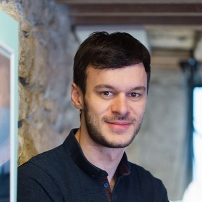

ABOUT ME
Hi! My name is Romain BERTHON. Welcome to my personal tech blog.

I’m working as a professional software developer since I graduated in 2014. My main experience is on the back end side, but I also have some experience on the UI side, first with desktop clients (Windows Form, WPF then UWP) and now with web clients.
Early in my career, I’ve been introduced to craft practices and techniques like TDD, BDD, DDD or Extreme-Programming. I’m using them on a daily basis. I also share about them on this blog and at community events like conferences and local meetups.
ABOUT THIS BLOG
Over the years, I’ve accumulated a lot of experience on various topics. I try to write about topics where I think my experience is valuable enough to be shared (with you and the future self). I also regroup talks that I gave at conferences.
I’ve decided to write all my new posts in English. However, I had another blog where I was used to publishing in French. As I have retrieved my old articles here, you will find content in French and English in this blog.